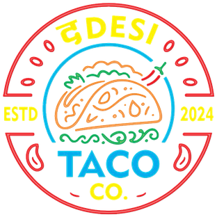

Thanks for coming by!
Tap what you had. We write your review, you just paste it on Google. Takes 30 seconds.
How was it?
What you had
What you liked
Could be better (optional)
Pick at least one thing above.
Your review
On Google, just 4 quick taps:
- Tap stars
- Tap the box
- Tap Paste
- Tap Post
📷 Got food pics? Tap Add photos on Google before Post.
Something not right? Tell us honestly on Google, or ask for Chirag at the counter. We read every review.